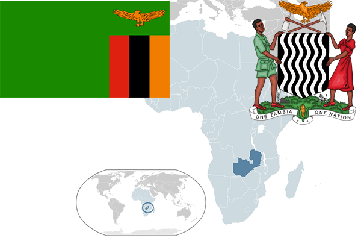

To`liq nomi: Zambiya Respublikasi
Region: Markaziy Afrika
Qonunchilik shakli: Respublika
Mustaqillik kuni: 4 oktabr 1964-yil
Poytaxt: Lusaka
Maydoni: 752,614 km²
Chegaradosh davlatlari: Tanzaniya, Malavi, Mozambik, Zimbabve, Botsvana, Namibiya, Angola, Kongo
Aholisi: 16 100 587 (2015-yil)
Aholi zichligi: 21,7 /км²
Aholining o`rtacha yoshi: 60,86 yil
Rasmiy tili: Ingliz tili
Dini: Xristian
Pul birligi: Kvacha
Telefon prefiksi: +260
Internet domen: .zm
Xalqaro tashkilotlarga a`zoligi: BMT
Dengiz va okeanlarga chiqishi: Yo’q
YIM: Butun: $21 mlrd(2015-yil) Jon boshiga: $1256
Yirik shaharlari: Lusaka